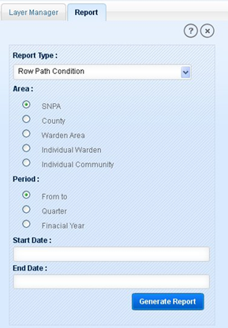
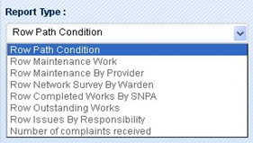
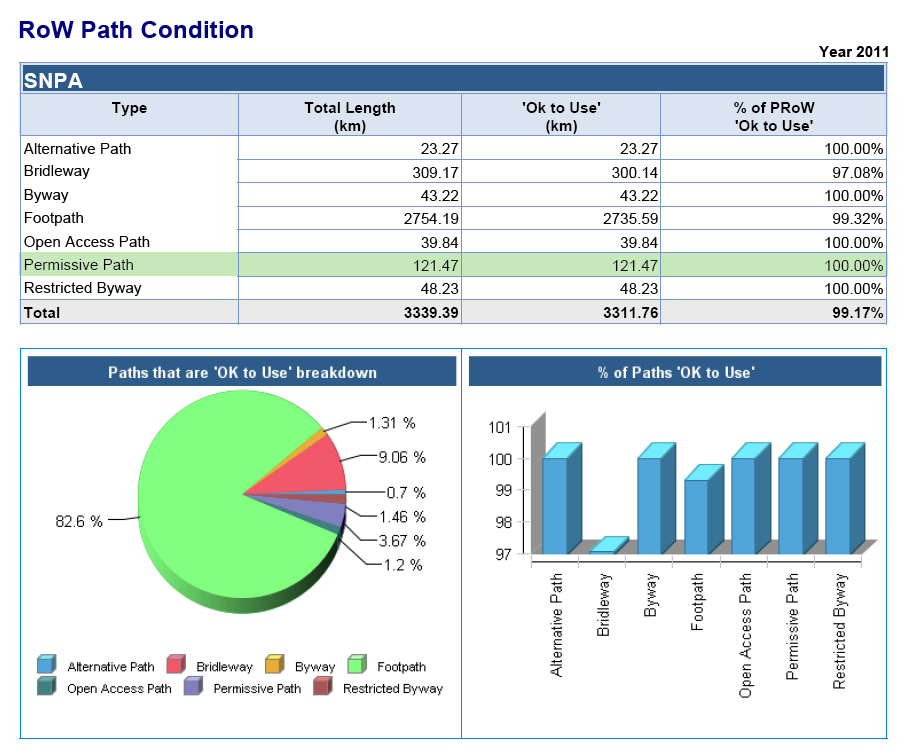

‘Report’ tool allows user to generate reports under different type of criteria like on path condition/outstanding work/ complaints/Issues/complaints in specified area like County/SNPA/Warden Area/Community and for specific period of time like Quarterly/yearly/date wise.

Fig.1 Report Tab
To generate report:
First select report type from the drop-down.

Fig.1 Report Types
Select area from the options :
SNPA
County
Warden Area
Individual Warden: as user selects this option, application displays Filter drop-down box to select a warden from the list.
Individual Community: on selecting it application displays Filter drop-down box with the list of Communities names. Select a community from this list.
Select period from three option:
From to: as user selects this option application displays two calendar control boxes Start Date and End date. Select the required dates for respective fields.
Quarter: if user selects Quarter option, application displays two drop-down boxes Quarter and Year. Select quarter from four quarters and select Year for selected quarter.
Financial Year: if user selects Financial Year option, application displays one drop-down box year. Select year for report.
Click on Generate Report button.
Application displays report in a new browser window in PDF format.

Fig.3 Report Format for RoW path condition for SNPA area for financial year 2011